Controls — untouched golds
- The exact starting points every comparison and locality measure anchors to
sign-off carried three logged plan amendments (PROFILE-B label removal, completed guide-matched destination bands with an independent read-back coverage check, W1 blank-tone lift), applied in the approval PR before the freeze
What we need from you
Sign-off on this plan and its $5.50 cap — or strike rows first (B at $0.46, R at $1.30, or any one of the four D′ variants at $0.46 each, all-in). Read the full ask ↓
Planned spend against the round cap$4.98 / $5.50
Fix the one feature both wallpaper golds still get wrong — the scythe — by rebuilding each blade to the approved profile-B arc (and straightening W1's bowed haft), while changing nothing else the humans have already accepted. W1's blade currently curls almost a half-circle below her feet; W2's rises into the wing feathers. Rather than betting everything on r4's winning mechanism, the round runs the corrected versions of the techniques r4 said to retry, one new guide-conditioned mechanism, and the deferred cross-model challenger, so the mechanism evidence generalizes beyond wing removal to the harder reshape-to-target task.
All arms use Gemini 3.1 Flash Image at 2K except the challenger row. Each arm runs against both wallpapers (except R, W2-only): "W1" means the A1 gold, "W2" the r3 keeper. The crop and blank arms edit a deterministic scythe-region crop and are pasted back into the untouched gold, so their candidates cannot change anything outside their rectangle.
Input(s)r5-<w>-scythe-crop-blankmin + r5-<w>-blankmin prompt
Rolls2 per base (4)
See this case’s inputsInput(s)r5-<w>-scythe-crop-blankbox + r5-<w>-blankbox prompt
Rolls2 per base (4)
See this case’s inputsInput(s)r5-<w>-scythe-crop-blankboxg + r5-<w>-blankboxg prompt
Rolls2 per base (4)
See this case’s inputsInput(s)W2 gold (W2 only) + r5-w2-ff prompt
That is 34 paid image-generation calls: sixteen independent two-roll Flash Batch cells and two sequential one-roll Riverflow calls, within the $5.50 cap below. W1 full-frame arms (A, B, G) bundle the haft straightening with the blade reshape per Dimitri's r3 ruling; the W1 crop and blank arms honestly cannot reach the whole haft, so they are graded on the blade alone and a C′/D′ keeper would leave the haft for a follow-up decision.
Everything that goes in, grouped by the choice it belongs to. Click any image to zoom; open a prompt to read the exact text this round spends against. Crop sets show both the cut overview and every exact output crop.
The exact starting points. They cost nothing and anchor every locality measure and human comparison. W1 is r4's adopted keeper A1; W2 is the r3 keeper picked up again after sitting out r4.
scythe-valkyrie-r4-w1-ff-1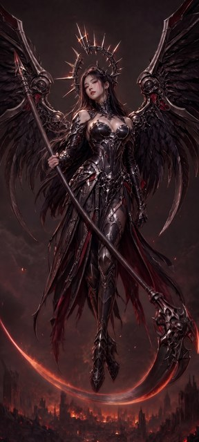
scythe-valkyrie-r3-w2-all-2
The r4-adopted mechanism, now on the harder reshape-to-target task: one surgical ask against the full wallpaper.
scythe-valkyrie-r4-w1-ff-1scythe-valkyrie-r3-w2-all-2projects/bluemneme/scythe-valkyrie/prompts/r5-w1-ff.txt
ATTACHED IMAGE One image is attached. IMAGE 1 is a finished photorealistic vertical wallpaper of an angel-of-death valkyrie floating above a burning ruined city. Make only the scythe corrections below. EDIT — RESHAPE THE BLADE AND STRAIGHTEN THE HAFT The scythe currently has two problems. First, its blade sweeps far too deeply, curling almost a half-circle below and around her feet. Remove that entire deep crescent — including the glowing arc it traces past the viewer's left edge and the broad blade section hooking around the right of the ornate head — and rebuild the blade to the target geometry below, attached to the same ornate head. Second, the haft bows visibly; straighten it into one perfectly straight cylindrical pole. Keep BOTH of her hands and arms exactly where they are: the straight pole passes through her existing upper grip and meets the ornate head where the old haft does, so the pole above her hand sits at a slightly steeper angle and is shorter than before, with the spear-like counterweight still projecting beyond her grip inside the frame. Do not move or re-pose her hands or arms. The new blade passes BEHIND her boots, exactly as the old one did. TARGET BLADE GEOMETRY The finished scythe has exactly ONE long blade. It leaves the ornate mechanical head roughly PERPENDICULAR to the haft and carries mostly OUTWARD toward the viewer's left in one smooth, consistently curved, SHALLOW sweep of about 50 degrees of total curvature — never a hook, never a half-circle, never curling back up toward a wing. Because the haft leans steeply, the blade descends gently and its tip finishes just slightly ABOVE horizontal. Visible background separates the blade from both wings along its whole length, and from the figure everywhere except where it passes her legs. The short counter-spike ornament on the head may remain exactly as it is; it never grows into a second blade. Render the new blade in the same material, edge treatment, lighting and painterly style as the rest of the artwork. PRESERVATION Apart from those scythe corrections, reproduce IMAGE 1 EXACTLY: the same woman, face, expression, hair, halo crown, armour, ornament, pose, hands, both wings, hanging cloth, background, lighting, colour grading, texture and framing on the same tall canvas. Do not restyle, re-light, sharpen, crop, extend or reinterpret anything. Add no new object and no text, labels, logos or watermarks.
projects/bluemneme/scythe-valkyrie/prompts/r5-w2-ff.txt
ATTACHED IMAGE One image is attached. IMAGE 1 is a finished photorealistic vertical wallpaper of an angel-of-death valkyrie under a full moon among ruined gothic arches. Make only the scythe correction below. EDIT — RESHAPE THE BLADE The scythe's blade currently rises as a long sabre from the ornate skull head toward the upper viewer-left, its tip climbing high into the hanging wing feathers. Remove that entire rising blade and rebuild it to the target geometry below, attached to the same ornate skull head: the new blade sweeps gently DOWNWARD toward the lower viewer-left instead of rising, and passes IN FRONT of her leg armour. The haft is already straight; leave it exactly as it is. TARGET BLADE GEOMETRY The finished scythe has exactly ONE long blade. It leaves the ornate mechanical head roughly PERPENDICULAR to the haft and carries mostly OUTWARD toward the viewer's left in one smooth, consistently curved, SHALLOW sweep of about 50 degrees of total curvature — never a hook, never a half-circle, never curling back up toward a wing. Because the haft leans steeply, the blade descends gently and its tip finishes just slightly ABOVE horizontal. Visible background separates the blade from both wings along its whole length, and from the figure everywhere except where it passes her legs. The short counter-spike ornament on the head may remain exactly as it is; it never grows into a second blade. Render the new blade in the same material, edge treatment, lighting and painterly style as the rest of the artwork. PRESERVATION Apart from that blade correction, reproduce IMAGE 1 EXACTLY: the same woman, face, expression, hair, halo crown and its detached spike, armour, ornament, pose, both wings, hanging cloth, moon, ruins, lighting, colour grading, texture and framing on the same tall canvas. Her hands stay exactly as drawn — including the small blade held in her lower hand; do not remove or alter it in this pass. Do not restyle, re-light, sharpen, crop, extend or reinterpret anything. Add no new object and no text, labels, logos or watermarks.
r4's close second: redraw the whole picture while describing the desired scythe, instead of surgical correction wording.
scythe-valkyrie-r4-w1-ff-1scythe-valkyrie-r3-w2-all-2projects/bluemneme/scythe-valkyrie/prompts/r5-w1-sr.txt
ATTACHED IMAGE One image is attached. IMAGE 1 is a finished photorealistic vertical wallpaper of an angel-of-death valkyrie floating above a burning ruined city. Redraw this same picture at the same quality and framing. This arm deliberately describes the desired whole picture rather than asking for a light retouch, but the only requested content changes are the scythe corrections below. BUILD — SCYTHE She carries one great scythe and no other prop. Its haft is one perfectly straight cylindrical pole armoured in the suit's design language: it passes through her existing upper grip and meets the ornate head where IMAGE 1's haft does, so it sits slightly steeper than IMAGE 1's bowed pole, with the spear-like counterweight projecting beyond the upper grip inside the frame. Her hands and arms are exactly as in IMAGE 1 — do not move or re-pose them; exactly two hands, five fingers each, no extra, duplicated or ghost hand. The ornate skull-and-blade head sits low on the viewer's right, unchanged from IMAGE 1. The blade follows the target geometry below and passes BEHIND her boots. The deep half-circle crescent of IMAGE 1 — including its glowing sweep below her feet and the blade section hooking right of the head — does not exist in the finished picture. TARGET BLADE GEOMETRY The finished scythe has exactly ONE long blade. It leaves the ornate mechanical head roughly PERPENDICULAR to the haft and carries mostly OUTWARD toward the viewer's left in one smooth, consistently curved, SHALLOW sweep of about 50 degrees of total curvature — never a hook, never a half-circle, never curling back up toward a wing. Because the haft leans steeply, the blade descends gently and its tip finishes just slightly ABOVE horizontal. Visible background separates the blade from both wings along its whole length, and from the figure everywhere except where it passes her legs. The short counter-spike ornament on the head may remain exactly as it is; it never grows into a second blade. Render the new blade in the same material, edge treatment, lighting and painterly style as the rest of the artwork. PRESERVATION Apart from those scythe corrections, reproduce IMAGE 1 EXACTLY: the same woman, face, expression, hair, halo crown, armour, ornament, pose, hands, both wings, hanging cloth, background, lighting, colour grading, texture and framing on the same tall canvas. Do not restyle, re-light, sharpen, crop, extend or reinterpret anything. Add no new object and no text, labels, logos or watermarks.
projects/bluemneme/scythe-valkyrie/prompts/r5-w2-sr.txt
ATTACHED IMAGE One image is attached. IMAGE 1 is a finished photorealistic vertical wallpaper of an angel-of-death valkyrie under a full moon among ruined gothic arches. Redraw this same picture at the same quality and framing. This arm deliberately describes the desired whole picture rather than asking for a light retouch, but the only requested content change is the blade correction below. BUILD — SCYTHE She carries one great scythe and no other prop, held exactly as in IMAGE 1 with its perfectly straight cylindrical haft on the same steep diagonal and the spear-like counterweight beyond the upper grip. The ornate skull head sits low on the viewer's right, unchanged from IMAGE 1. The blade follows the target geometry below, sweeping gently DOWNWARD toward the lower viewer-left and passing IN FRONT of her leg armour. The rising sabre of IMAGE 1, whose tip climbs into the hanging wing feathers, does not exist in the finished picture. The small blade in her lower hand stays exactly as in IMAGE 1. TARGET BLADE GEOMETRY The finished scythe has exactly ONE long blade. It leaves the ornate mechanical head roughly PERPENDICULAR to the haft and carries mostly OUTWARD toward the viewer's left in one smooth, consistently curved, SHALLOW sweep of about 50 degrees of total curvature — never a hook, never a half-circle, never curling back up toward a wing. Because the haft leans steeply, the blade descends gently and its tip finishes just slightly ABOVE horizontal. Visible background separates the blade from both wings along its whole length, and from the figure everywhere except where it passes her legs. The short counter-spike ornament on the head may remain exactly as it is; it never grows into a second blade. Render the new blade in the same material, edge treatment, lighting and painterly style as the rest of the artwork. PRESERVATION Apart from that blade correction, reproduce IMAGE 1 EXACTLY: the same woman, face, expression, hair, halo crown and its detached spike, armour, ornament, pose, both wings, hanging cloth, moon, ruins, lighting, colour grading, texture and framing on the same tall canvas. Her hands stay exactly as drawn — including the small blade held in her lower hand; do not remove or alter it in this pass. Do not restyle, re-light, sharpen, crop, extend or reinterpret anything. Add no new object and no text, labels, logos or watermarks.
r4's C retried with the fixes Dimitri named: each crop contains the complete scythe head, current blade and profile-B target band, and the prompt describes exactly what the crop shows. The edited crop is deterministically feather-composited back into the untouched gold, so nothing outside the rectangle can change. Blade-only by construction — the W1 haft above the crop is out of reach.
scythe-valkyrie-r5-w1-scythe-crop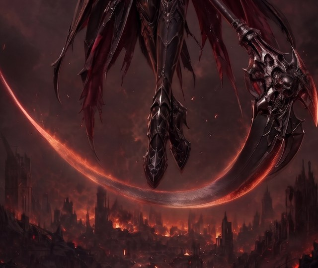
scythe-valkyrie-r5-w2-scythe-crop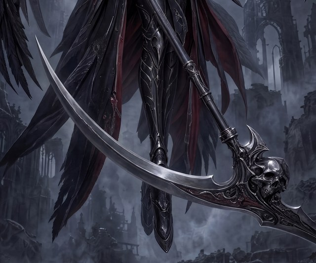
projects/bluemneme/scythe-valkyrie/prompts/r5-w1-crop.txt
ATTACHED IMAGE One image is attached. IMAGE 1 is the BOTTOM PORTION of a taller finished photorealistic wallpaper, cropped for this edit; her upper body, both wings and the halo continue above the crop and are not visible here. Visible inside the crop: her armoured boots pointing down at centre (she floats above a burning ruined city), dark hanging cloth and feather fringes in the upper left, the scythe's lower haft entering from the top right, its ornate skull-and-blade head on the right, and the current blade sweeping in a deep glowing crescent below and around her feet. Make only the edit below and return the same crop framing on the same canvas shape. EDIT — RESHAPE THE BLADE Remove the entire deep crescent — including the glowing arc running past the viewer's left edge and the broad blade section hooking around the right of the ornate head — and rebuild the blade to the target geometry below, attached to the same ornate head. The new blade passes BEHIND her boots, exactly as the old one did. This crop does not contain the whole haft, so leave the visible haft section exactly as it is. TARGET BLADE GEOMETRY The finished scythe has exactly ONE long blade. It leaves the ornate mechanical head roughly PERPENDICULAR to the haft and carries mostly OUTWARD toward the viewer's left in one smooth, consistently curved, SHALLOW sweep of about 50 degrees of total curvature — never a hook, never a half-circle, never curling back up toward a wing. Because the haft leans steeply, the blade descends gently and its tip finishes just slightly ABOVE horizontal. Visible background separates the blade from both wings along its whole length, and from the figure everywhere except where it passes her legs. The short counter-spike ornament on the head may remain exactly as it is; it never grows into a second blade. Render the new blade in the same material, edge treatment, lighting and painterly style as the rest of the artwork. PRESERVATION Apart from the blade reshape, reproduce IMAGE 1 exactly: boots, cloth and feather fringes, the visible haft section, the ornate head and its skull-work, the burning city and the haze all unchanged, at the same framing and canvas shape. Do not zoom, crop further or extend the scene. Do not add her upper body, wings or halo — they belong above this crop. Add no new object and no text, labels, logos or watermarks.
projects/bluemneme/scythe-valkyrie/prompts/r5-w2-crop.txt
ATTACHED IMAGE One image is attached. IMAGE 1 is the BOTTOM PORTION of a taller finished photorealistic wallpaper, cropped for this edit; her upper body, both wings and the halo continue above the crop and are not visible here. Visible inside the crop: her armoured leg and boot at centre among hanging cloak panels and wing feathers, the scythe's straight haft descending from the top edge to its ornate skull head on the right, the current blade rising as a long silver sabre from that head toward the upper left with its tip among the feathers, and moonlit fog and ruined arches behind. Make only the edit below and return the same crop framing on the same canvas shape. EDIT — RESHAPE THE BLADE Remove the entire rising sabre blade and rebuild it to the target geometry below, attached to the same ornate skull head: the new blade sweeps gently DOWNWARD toward the lower viewer-left instead of rising, and passes IN FRONT of her leg armour. This crop does not contain the whole haft, so leave the visible haft section exactly as it is. TARGET BLADE GEOMETRY The finished scythe has exactly ONE long blade. It leaves the ornate mechanical head roughly PERPENDICULAR to the haft and carries mostly OUTWARD toward the viewer's left in one smooth, consistently curved, SHALLOW sweep of about 50 degrees of total curvature — never a hook, never a half-circle, never curling back up toward a wing. Because the haft leans steeply, the blade descends gently and its tip finishes just slightly ABOVE horizontal. Visible background separates the blade from both wings along its whole length, and from the figure everywhere except where it passes her legs. The short counter-spike ornament on the head may remain exactly as it is; it never grows into a second blade. Render the new blade in the same material, edge treatment, lighting and painterly style as the rest of the artwork. PRESERVATION Apart from the blade reshape, reproduce IMAGE 1 exactly: her leg armour and boot, the cloak panels and wing feathers, the visible haft section, the ornate skull head, the fog and ruined arches all unchanged, at the same framing and canvas shape. Do not zoom, crop further or extend the scene. Do not add her upper body, wings or halo — they belong above this crop. Add no new object and no text, labels, logos or watermarks.
One pole of the family: only the old blade, exactly as Dimitri painted it in the mask panels, is blanked. The model fills those shapes as background and paints the NEW blade additively over the intact canvas — the only variant whose new blade is expected outside the blanked area.
scythe-valkyrie-r5-w1-scythe-crop-blankmin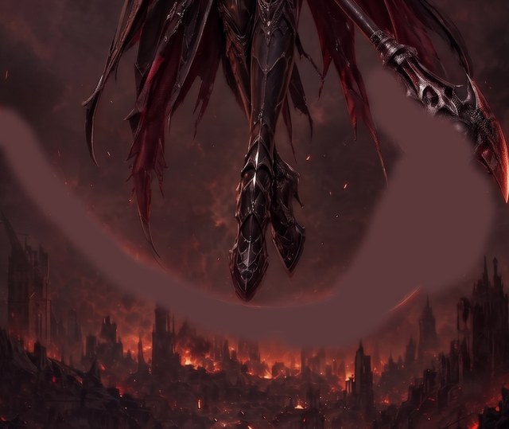
scythe-valkyrie-r5-w2-scythe-crop-blankmin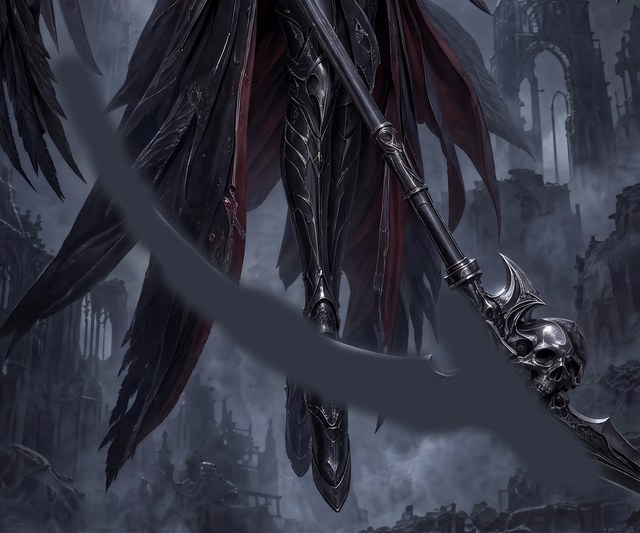
projects/bluemneme/scythe-valkyrie/prompts/r5-w1-blankmin.txt
ATTACHED IMAGE One image is attached. IMAGE 1 is the bottom portion of a taller finished photorealistic wallpaper. The scythe's old blade and most of its ornate head have been PAINTED OUT exactly along their outline: the flat dark shapes are the blanked areas. Everything else — her boots (centre), the hanging cloth and feather fringes (upper left), the haft entering from the top right with its wrapped collar, and the burning city below — is intact. EDIT — FILL THE BLANKS, THEN PAINT THE NEW BLADE First fill every blanked shape with the background that belongs behind it — smoky red-brown haze and the burning city skyline — matched to the surrounding lighting, colour and grain so no join is visible. Then rebuild a compact ornate skull-and-blade head at the end of the haft's collar in the suit's design language, and paint the scythe's NEW blade from it to the target geometry below. This variant deliberately paints the new blade OVER the intact canvas where it belongs, passing BEHIND her boots; the new blade and its rebuilt head are the only content added outside the blanked shapes. TARGET BLADE GEOMETRY The finished scythe has exactly ONE long blade. It leaves the ornate mechanical head roughly PERPENDICULAR to the haft and carries mostly OUTWARD toward the viewer's left in one smooth, consistently curved, SHALLOW sweep of about 50 degrees of total curvature — never a hook, never a half-circle, never curling back up toward a wing. Because the haft leans steeply, the blade descends gently and its tip finishes just slightly ABOVE horizontal. Visible background separates the blade from both wings along its whole length, and from the figure everywhere except where it passes her legs. The short counter-spike ornament on the head may remain exactly as it is; it never grows into a second blade. Render the new blade in the same material, edge treatment, lighting and painterly style as the rest of the artwork. PRESERVATION Apart from filling the blanked shapes and adding the new head and blade, reproduce IMAGE 1 EXACTLY: the same boots, cloth and feather fringes, haft and collar, city, haze, lighting, colour, grain, framing and canvas shape. Do not zoom, crop further or extend the scene. Add no other new object and no text, labels, logos or watermarks.
projects/bluemneme/scythe-valkyrie/prompts/r5-w2-blankmin.txt
ATTACHED IMAGE One image is attached. IMAGE 1 is the bottom portion of a taller finished photorealistic wallpaper. The scythe's old blade and its root on the head have been PAINTED OUT exactly along their outline: the flat grey shapes are the blanked areas. Everything else — her leg armour and boot (centre), the hanging cloak panels and wing feathers, the straight haft descending from the top edge, the skull core of the scythe's ornate head (right), and the moonlit fog and ruins — is intact. EDIT — FILL THE BLANKS, THEN PAINT THE NEW BLADE First fill every blanked shape with what belongs behind it — hanging feathers and cloak at the upper left, moonlit fog and ruined arches elsewhere — matched to the surrounding lighting, colour and grain so no join is visible. Then re-form the blade's socket below the kept skull and paint the scythe's NEW blade from it to the target geometry below, sweeping gently DOWNWARD toward the lower viewer-left and passing IN FRONT of her leg armour. This variant deliberately paints the new blade OVER the intact canvas where it belongs; the new blade and its socket are the only content added outside the blanked shapes. TARGET BLADE GEOMETRY The finished scythe has exactly ONE long blade. It leaves the ornate mechanical head roughly PERPENDICULAR to the haft and carries mostly OUTWARD toward the viewer's left in one smooth, consistently curved, SHALLOW sweep of about 50 degrees of total curvature — never a hook, never a half-circle, never curling back up toward a wing. Because the haft leans steeply, the blade descends gently and its tip finishes just slightly ABOVE horizontal. Visible background separates the blade from both wings along its whole length, and from the figure everywhere except where it passes her legs. The short counter-spike ornament on the head may remain exactly as it is; it never grows into a second blade. Render the new blade in the same material, edge treatment, lighting and painterly style as the rest of the artwork. PRESERVATION Apart from filling the blanked shapes and adding the new blade and its socket, reproduce IMAGE 1 EXACTLY: the same leg armour, cloak panels, feathers, haft, skull head, fog, ruins, lighting, colour, grain, framing and canvas shape. Do not zoom, crop further or extend the scene. Add no other new object and no text, labels, logos or watermarks.
Dimitri's painted mask (authoritative for the old blade, overriding every protect polygon) unioned with the socket-anchored profile-B target band, so both the removal and the new blade's home are blanked. W1's mask blanks most of the old ornate head, so its prompt asks for a compact rebuilt head at the haft's collar.
scythe-valkyrie-r5-w1-scythe-crop-blank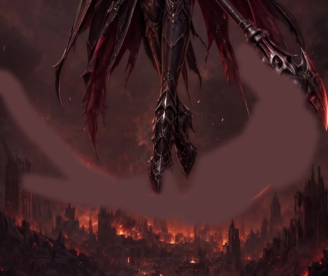
scythe-valkyrie-r5-w2-scythe-crop-blank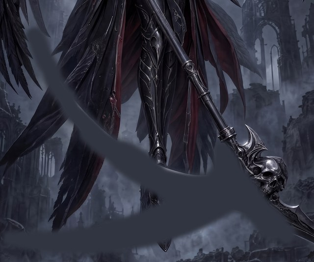
scythe-valkyrie-r5-w1-human-blank-mask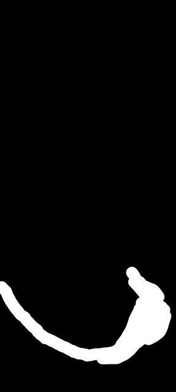
scythe-valkyrie-r5-w2-human-blank-maskprojects/bluemneme/scythe-valkyrie/prompts/r5-w1-blank.txt
ATTACHED IMAGE One image is attached. IMAGE 1 is the bottom portion of a taller finished photorealistic wallpaper. The scythe's old blade and most of its ornate head have been PAINTED OUT: the flat dark regions sweeping below and beside her boots and at the upper right are blanked areas awaiting new content. Her boots (centre), the hanging cloth and feather fringes (upper left), and the haft entering from the top right with its wrapped collar are intact and stay. EDIT — PAINT THE NEW BLADE AND FILL THE REST Inside the blanked regions only: rebuild a compact ornate skull-and-blade head at the end of the haft's collar in the suit's design language, and paint the scythe's new blade from it to the target geometry below, emerging at its new angle with no trace of the old blade or old head, passing BEHIND her boots; everywhere else in the blank, restore the background that belongs there — smoky red-brown haze and the burning city skyline — matched to the surrounding lighting, colour and grain so no join is visible. Also remove the faint leftover traces of the old blade that remain beside her boots and below the cloth fringes. Do NOT paint any wing, limb, feather or figure content into the blank. TARGET BLADE GEOMETRY The finished scythe has exactly ONE long blade. It leaves the ornate mechanical head roughly PERPENDICULAR to the haft and carries mostly OUTWARD toward the viewer's left in one smooth, consistently curved, SHALLOW sweep of about 50 degrees of total curvature — never a hook, never a half-circle, never curling back up toward a wing. Because the haft leans steeply, the blade descends gently and its tip finishes just slightly ABOVE horizontal. Visible background separates the blade from both wings along its whole length, and from the figure everywhere except where it passes her legs. The short counter-spike ornament on the head may remain exactly as it is; it never grows into a second blade. Render the new blade in the same material, edge treatment, lighting and painterly style as the rest of the artwork. PRESERVATION Outside the blanked regions, reproduce IMAGE 1 EXACTLY: the same boots, cloth and feather fringes, haft and wrapped collar, city, haze, lighting, colour, grain, framing and canvas shape. Do not zoom, crop further or extend the scene. Beyond the rebuilt head and new blade asked for above, add no new object and no text, labels, logos or watermarks.
projects/bluemneme/scythe-valkyrie/prompts/r5-w2-blank.txt
ATTACHED IMAGE One image is attached. IMAGE 1 is the bottom portion of a taller finished photorealistic wallpaper. The scythe's old blade and its root on the head have been PAINTED OUT: the flat grey regions sweeping diagonally across the frame and around the head are blanked areas awaiting new content. Her leg armour and boot (centre), the hanging cloak panels and wing feathers, the straight haft descending from the top edge, and the skull core of the scythe's ornate head (right) are intact and stay. EDIT — PAINT THE NEW BLADE AND FILL THE REST Inside the blanked region only: paint the scythe's new blade to the target geometry below, forming a fresh socket on the ornate skull head so the blade emerges at its new angle with no trace of the old angle, sweeping gently DOWNWARD toward the lower viewer-left and passing IN FRONT of her leg armour; where the blank crosses her leg, continue the leg armour naturally behind the new blade. Everywhere else in the blank, restore what belongs there — hanging feathers and cloak at the upper left, moonlit fog and ruined arches elsewhere — matched to the surrounding lighting, colour and grain so no join is visible. Do NOT paint any new wing, figure or object beyond the blade itself into the blank. TARGET BLADE GEOMETRY The finished scythe has exactly ONE long blade. It leaves the ornate mechanical head roughly PERPENDICULAR to the haft and carries mostly OUTWARD toward the viewer's left in one smooth, consistently curved, SHALLOW sweep of about 50 degrees of total curvature — never a hook, never a half-circle, never curling back up toward a wing. Because the haft leans steeply, the blade descends gently and its tip finishes just slightly ABOVE horizontal. Visible background separates the blade from both wings along its whole length, and from the figure everywhere except where it passes her legs. The short counter-spike ornament on the head may remain exactly as it is; it never grows into a second blade. Render the new blade in the same material, edge treatment, lighting and painterly style as the rest of the artwork. PRESERVATION Outside the blanked region, reproduce IMAGE 1 EXACTLY: the same leg armour, cloak panels, feathers, haft, ornate skull head, fog, ruins, lighting, colour, grain, framing and canvas shape. Do not zoom, crop further or extend the scene. Add no new object and no text, labels, logos or watermarks.
Dimitri's anchoring counter-measure: one much larger rectangle whose outline carries no blade-shape cue, unioned with everything his painted mask covers (so nothing he painted survives, including beyond the rectangle), figure/haft/head protect islands excluded. Larger restored area is the accepted trade-off.
scythe-valkyrie-r5-w1-scythe-crop-blankbox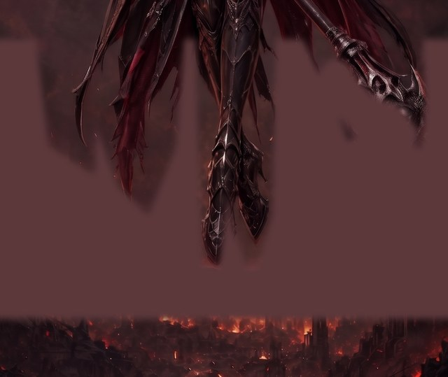
scythe-valkyrie-r5-w2-scythe-crop-blankbox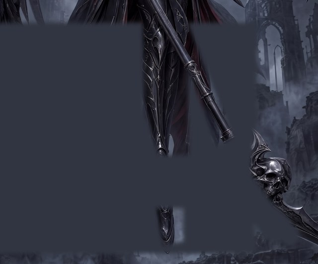
projects/bluemneme/scythe-valkyrie/prompts/r5-w1-blankbox.txt
ATTACHED IMAGE One image is attached. IMAGE 1 is the bottom portion of a taller finished photorealistic wallpaper. One LARGE mostly-rectangular region spanning most of the lower frame has been PAINTED OUT flat, awaiting new content; the scythe's old blade and most of its ornate head used to sit inside it. Left intact inside and around the blank: her boots (centre), the hanging cloth and feather fringes (upper left), the haft entering from the top with its wrapped collar, and the burning city along the bottom edge. EDIT — PAINT THE NEW BLADE AND FILL THE REST Inside the blanked region only: rebuild a compact ornate skull-and-blade head at the end of the haft's collar in the suit's design language, and paint the scythe's new blade from it to the target geometry below, passing BEHIND her boots. Everywhere else in the rectangle, restore what belongs there — smoky red-brown haze, the tops of the burning city skyline, and the natural continuations of the boots, fringes, haft and head where they meet the blank — matched to the surrounding lighting, colour and grain so no join is visible. The old blade does not reappear anywhere. Do NOT paint any wing, limb, feather or new figure content into the blank. TARGET BLADE GEOMETRY The finished scythe has exactly ONE long blade. It leaves the ornate mechanical head roughly PERPENDICULAR to the haft and carries mostly OUTWARD toward the viewer's left in one smooth, consistently curved, SHALLOW sweep of about 50 degrees of total curvature — never a hook, never a half-circle, never curling back up toward a wing. Because the haft leans steeply, the blade descends gently and its tip finishes just slightly ABOVE horizontal. Visible background separates the blade from both wings along its whole length, and from the figure everywhere except where it passes her legs. The short counter-spike ornament on the head may remain exactly as it is; it never grows into a second blade. Render the new blade in the same material, edge treatment, lighting and painterly style as the rest of the artwork. PRESERVATION Outside the blanked regions, reproduce IMAGE 1 EXACTLY: the same boots, cloth and feather fringes, haft and wrapped collar, city, haze, lighting, colour, grain, framing and canvas shape. Do not zoom, crop further or extend the scene. Beyond the rebuilt head and new blade asked for above, add no new object and no text, labels, logos or watermarks.
projects/bluemneme/scythe-valkyrie/prompts/r5-w2-blankbox.txt
ATTACHED IMAGE One image is attached. IMAGE 1 is the bottom portion of a taller finished photorealistic wallpaper. One LARGE mostly-rectangular region spanning most of the frame's left and centre has been PAINTED OUT flat, awaiting new content; the scythe's old blade and its root used to rise through it. Left intact inside and around the blank: her upper leg armour and her boot (centre), the straight haft descending to the skull core of the scythe's ornate head (right), and the moonlit fog and ruined arches around the edges. EDIT — PAINT THE NEW BLADE AND FILL THE REST Inside the blanked rectangle only: paint the scythe's new blade to the target geometry below, forming a fresh socket on the ornate skull head so the blade emerges at its new angle, sweeping gently DOWNWARD toward the lower viewer-left and passing IN FRONT of her leg armour; continue her lower leg naturally behind it. Everywhere else in the rectangle, restore what belongs there — hanging wing feathers and cloak panels at the upper left, moonlit fog and ruined arches elsewhere, and the natural continuations of leg, boot, haft and head where they meet the blank — matched to the surrounding lighting, colour and grain so no join is visible. The old rising blade does not reappear anywhere. Do NOT paint any new wing mass, figure or object beyond the blade itself into the blank. TARGET BLADE GEOMETRY The finished scythe has exactly ONE long blade. It leaves the ornate mechanical head roughly PERPENDICULAR to the haft and carries mostly OUTWARD toward the viewer's left in one smooth, consistently curved, SHALLOW sweep of about 50 degrees of total curvature — never a hook, never a half-circle, never curling back up toward a wing. Because the haft leans steeply, the blade descends gently and its tip finishes just slightly ABOVE horizontal. Visible background separates the blade from both wings along its whole length, and from the figure everywhere except where it passes her legs. The short counter-spike ornament on the head may remain exactly as it is; it never grows into a second blade. Render the new blade in the same material, edge treatment, lighting and painterly style as the rest of the artwork. PRESERVATION Outside the blanked region, reproduce IMAGE 1 EXACTLY: the same leg armour, cloak panels, feathers, haft, ornate skull head, fog, ruins, lighting, colour, grain, framing and canvas shape. Do not zoom, crop further or extend the scene. Add no new object and no text, labels, logos or watermarks.
Dimitri's combination proposal, pulled in from the deferred catalog at plan review: the same box blank with the profile-B blade silhouette and launch circle drawn inside it, so the fill is steered by drawn geometry rather than text alone. The deterministic guide-residue screen fails any composite that keeps the marks.
scythe-valkyrie-r5-w1-scythe-crop-blankboxg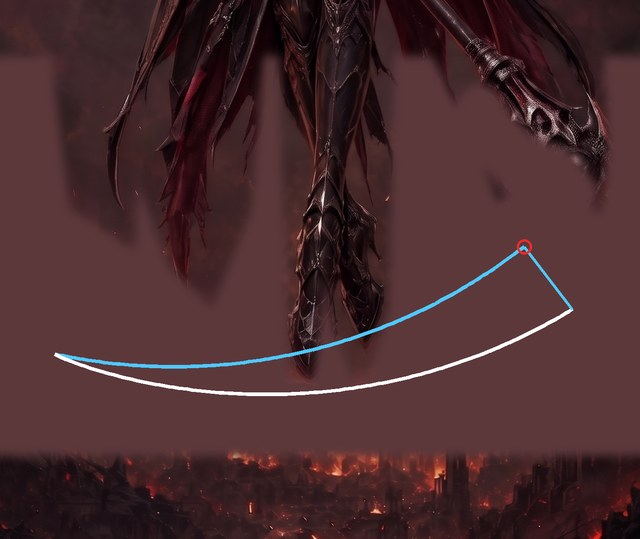
scythe-valkyrie-r5-w2-scythe-crop-blankboxg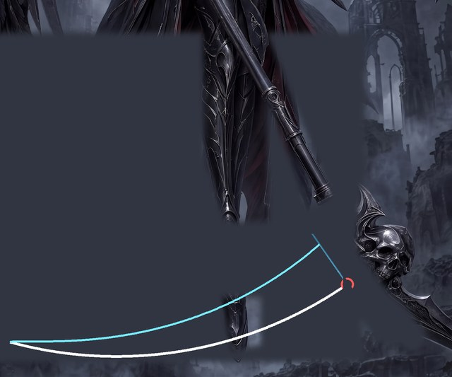
projects/bluemneme/scythe-valkyrie/prompts/r5-w1-blankboxg.txt
ATTACHED IMAGE One image is attached. IMAGE 1 is the bottom portion of a taller finished photorealistic wallpaper. One LARGE mostly-rectangular region spanning most of the lower frame has been PAINTED OUT flat; the scythe's old blade and most of its ornate head used to sit inside it. Drawn GUIDE MARKINGS that are not part of the artwork show where the new blade goes — a small red circle at the blade's launch point and a cyan-and-white outline of the required blade silhouette — crossing the blank and any intact content the blade passes (it goes BEHIND her boots). Left intact: her boots, the hanging fringes, the haft entering from the top with its wrapped collar, and the burning city along the bottom edge. EDIT — PAINT THE NEW BLADE ALONG THE GUIDE AND FILL THE REST Inside the blanked region only: rebuild a compact ornate skull-and-blade head at the end of the haft's collar and paint the scythe's new blade exactly along the drawn silhouette, launching at the red circle and passing BEHIND her boots; then fill the rest of the rectangle with what belongs there — smoky red-brown haze, the tops of the burning city skyline, and the natural continuations of boots, fringes, haft and head — matched to the surrounding lighting, colour and grain so no join is visible. Finally REMOVE every guide marking: no cyan, drawn-white or red diagram mark may remain anywhere. The old blade does not reappear. Do NOT paint any wing, limb, feather or new figure content into the blank. TARGET BLADE GEOMETRY The finished scythe has exactly ONE long blade. It leaves the ornate mechanical head roughly PERPENDICULAR to the haft and carries mostly OUTWARD toward the viewer's left in one smooth, consistently curved, SHALLOW sweep of about 50 degrees of total curvature — never a hook, never a half-circle, never curling back up toward a wing. Because the haft leans steeply, the blade descends gently and its tip finishes just slightly ABOVE horizontal. Visible background separates the blade from both wings along its whole length, and from the figure everywhere except where it passes her legs. The short counter-spike ornament on the head may remain exactly as it is; it never grows into a second blade. Render the new blade in the same material, edge treatment, lighting and painterly style as the rest of the artwork. PRESERVATION Outside the blanked regions, reproduce IMAGE 1 EXACTLY: the same boots, cloth and feather fringes, haft and wrapped collar, city, haze, lighting, colour, grain, framing and canvas shape. Do not zoom, crop further or extend the scene. Beyond the rebuilt head and new blade asked for above, add no new object and no text, labels, logos or watermarks.
projects/bluemneme/scythe-valkyrie/prompts/r5-w2-blankboxg.txt
ATTACHED IMAGE One image is attached. IMAGE 1 is the bottom portion of a taller finished photorealistic wallpaper. One LARGE mostly-rectangular region spanning most of the frame's left and centre has been PAINTED OUT flat; the scythe's old blade and its root used to rise through it. Drawn GUIDE MARKINGS that are not part of the artwork show where the new blade goes — a small red circle at the blade's launch point and a cyan-and-white outline of the required blade silhouette — crossing the blank and any intact content the blade passes. Left intact: her upper leg armour and boot, the straight haft descending to the skull core of the scythe's ornate head (right), and the moonlit fog and ruins around the edges. EDIT — PAINT THE NEW BLADE ALONG THE GUIDE AND FILL THE REST Inside the blanked rectangle only: paint the scythe's new blade exactly along the drawn silhouette, launching at the red circle, forming a fresh socket on the ornate skull head, sweeping gently DOWNWARD toward the lower viewer-left and passing IN FRONT of her leg armour, her lower leg continuing naturally behind it; then fill the rest of the rectangle with what belongs there — hanging feathers and cloak at the upper left, moonlit fog and ruined arches elsewhere — matched to the surrounding lighting, colour and grain so no join is visible. Finally REMOVE every guide marking: no cyan, drawn-white or red diagram mark may remain anywhere. The old rising blade does not reappear. Do NOT paint any new wing mass, figure or object beyond the blade itself into the blank. TARGET BLADE GEOMETRY The finished scythe has exactly ONE long blade. It leaves the ornate mechanical head roughly PERPENDICULAR to the haft and carries mostly OUTWARD toward the viewer's left in one smooth, consistently curved, SHALLOW sweep of about 50 degrees of total curvature — never a hook, never a half-circle, never curling back up toward a wing. Because the haft leans steeply, the blade descends gently and its tip finishes just slightly ABOVE horizontal. Visible background separates the blade from both wings along its whole length, and from the figure everywhere except where it passes her legs. The short counter-spike ornament on the head may remain exactly as it is; it never grows into a second blade. Render the new blade in the same material, edge treatment, lighting and painterly style as the rest of the artwork. PRESERVATION Outside the blanked region, reproduce IMAGE 1 EXACTLY: the same leg armour, cloak panels, feathers, haft, ornate skull head, fog, ruins, lighting, colour, grain, framing and canvas shape. Do not zoom, crop further or extend the scene. Add no new object and no text, labels, logos or watermarks.
New mechanism: the approved profile-B silhouette and launch circle are composited onto the gold as drawn guide marks, anchored at each blade's actual socket and drawn continuously over the frame (the prompts state where the finished blade passes behind the figure). W2's marks are the r4 diagram re-anchored by shift; W1's are synthesized parametrically from the profile-B numbers so the blade launches perpendicular to the re-angled haft axis, with the attachment chord parallel to it (Dimitri's 2026-08-16 reviews). W1 additionally carries a straight haft-axis line that passes through her UNCHANGED upper grip (re-angled at Dimitri's direction, so no hand re-pose is asked); W2 carries no axis line. The model rebuilds the scythe to match the guides and removes them; a deterministic color screen fails any output that keeps marks.
scythe-valkyrie-r5-w1-guide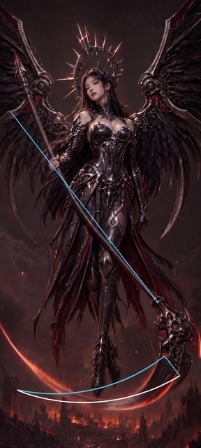
scythe-valkyrie-r5-w2-guide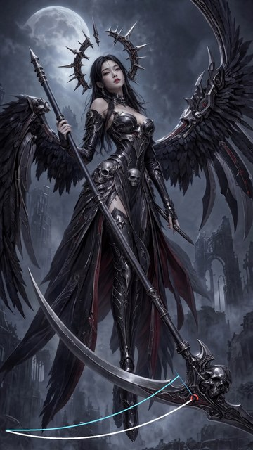
projects/bluemneme/scythe-valkyrie/prompts/r5-w1-guide.txt
ATTACHED IMAGE One image is attached. IMAGE 1 is a finished photorealistic vertical wallpaper carrying DRAWN GUIDE MARKINGS that are NOT part of the artwork: a thin straight cyan line along the intended haft axis (it passes exactly through her existing upper-hand grip), a small red circle where the blade must leave the ornate head, and a cyan-and-white curved outline low in the frame showing the required new blade silhouette. The outline is drawn continuously over everything for clarity; the finished blade itself passes BEHIND her boots and the hanging fringes. Use the guides to correct the scythe, then remove every guide mark. EDIT — RESHAPE THE SCYTHE TO MATCH THE GUIDES Straighten the haft into one perfectly straight cylindrical pole lying along the drawn axis line. The line passes through her existing upper grip and meets the ornate head where the old haft does, so her hands and arms DO NOT move — the pole above her hand simply sits steeper and shorter than before, with the spear-like counterweight still projecting beyond her grip inside the frame. Remove the current deep crescent blade entirely — including the glowing arc below her feet and the blade section hooking around the right of the head — and rebuild the blade so it fills the drawn silhouette, launching at the red circle and sweeping exactly as outlined, passing BEHIND her boots. Then REMOVE every guide marking: no cyan line, red circle or drawn outline may remain anywhere; restore the untouched artwork beneath each mark. TARGET BLADE GEOMETRY The finished scythe has exactly ONE long blade. It leaves the ornate mechanical head roughly PERPENDICULAR to the haft and carries mostly OUTWARD toward the viewer's left in one smooth, consistently curved, SHALLOW sweep of about 50 degrees of total curvature — never a hook, never a half-circle, never curling back up toward a wing. Because the haft leans steeply, the blade descends gently and its tip finishes just slightly ABOVE horizontal. Visible background separates the blade from both wings along its whole length, and from the figure everywhere except where it passes her legs. The short counter-spike ornament on the head may remain exactly as it is; it never grows into a second blade. Render the new blade in the same material, edge treatment, lighting and painterly style as the rest of the artwork. PRESERVATION Apart from those scythe corrections, reproduce IMAGE 1 EXACTLY: the same woman, face, expression, hair, halo crown, armour, ornament, pose, hands, both wings, hanging cloth, background, lighting, colour grading, texture and framing on the same tall canvas. Do not restyle, re-light, sharpen, crop, extend or reinterpret anything. Add no new object and no text, labels, logos or watermarks.
projects/bluemneme/scythe-valkyrie/prompts/r5-w2-guide.txt
ATTACHED IMAGE One image is attached. IMAGE 1 is a finished photorealistic vertical wallpaper carrying DRAWN GUIDE MARKINGS that are NOT part of the artwork: a small red circle where the blade must leave the ornate skull head, and a cyan-and-white curved outline low in the frame showing the required new blade silhouette. Use the guides to correct the blade, then remove every guide mark. EDIT — RESHAPE THE BLADE TO MATCH THE GUIDES The haft is already straight; leave it exactly as it is. Remove the current rising sabre blade entirely — its tip climbs into the hanging wing feathers — and rebuild the blade so it fills the drawn silhouette, launching at the red circle and sweeping exactly as outlined, passing IN FRONT of her leg armour. Then REMOVE every guide marking: no cyan line, red circle or drawn outline may remain anywhere; restore the untouched artwork beneath each mark. TARGET BLADE GEOMETRY The finished scythe has exactly ONE long blade. It leaves the ornate mechanical head roughly PERPENDICULAR to the haft and carries mostly OUTWARD toward the viewer's left in one smooth, consistently curved, SHALLOW sweep of about 50 degrees of total curvature — never a hook, never a half-circle, never curling back up toward a wing. Because the haft leans steeply, the blade descends gently and its tip finishes just slightly ABOVE horizontal. Visible background separates the blade from both wings along its whole length, and from the figure everywhere except where it passes her legs. The short counter-spike ornament on the head may remain exactly as it is; it never grows into a second blade. Render the new blade in the same material, edge treatment, lighting and painterly style as the rest of the artwork. PRESERVATION Apart from that blade correction, reproduce IMAGE 1 EXACTLY: the same woman, face, expression, hair, halo crown and its detached spike, armour, ornament, pose, both wings, hanging cloth, moon, ruins, lighting, colour grading, texture and framing on the same tall canvas. Her hands stay exactly as drawn — including the small blade held in her lower hand; do not remove or alter it in this pass. Do not restyle, re-light, sharpen, crop, extend or reinterpret anything. Add no new object and no text, labels, logos or watermarks.
The r4 deferred-catalog pickup: W2's originating model (Riverflow 2.5 Pro generated the r2 base) on the byte-identical complete contract as W2-A, so mechanism and model are the only variables. Runs only if the live schema gate confirms image-reference support and a per-call wrapper ceiling at or under the $0.60 reserve; otherwise the two calls are recorded as blocked and do not run.
scythe-valkyrie-r3-w2-all-2projects/bluemneme/scythe-valkyrie/prompts/r5-w2-ff.txt
ATTACHED IMAGE One image is attached. IMAGE 1 is a finished photorealistic vertical wallpaper of an angel-of-death valkyrie under a full moon among ruined gothic arches. Make only the scythe correction below. EDIT — RESHAPE THE BLADE The scythe's blade currently rises as a long sabre from the ornate skull head toward the upper viewer-left, its tip climbing high into the hanging wing feathers. Remove that entire rising blade and rebuild it to the target geometry below, attached to the same ornate skull head: the new blade sweeps gently DOWNWARD toward the lower viewer-left instead of rising, and passes IN FRONT of her leg armour. The haft is already straight; leave it exactly as it is. TARGET BLADE GEOMETRY The finished scythe has exactly ONE long blade. It leaves the ornate mechanical head roughly PERPENDICULAR to the haft and carries mostly OUTWARD toward the viewer's left in one smooth, consistently curved, SHALLOW sweep of about 50 degrees of total curvature — never a hook, never a half-circle, never curling back up toward a wing. Because the haft leans steeply, the blade descends gently and its tip finishes just slightly ABOVE horizontal. Visible background separates the blade from both wings along its whole length, and from the figure everywhere except where it passes her legs. The short counter-spike ornament on the head may remain exactly as it is; it never grows into a second blade. Render the new blade in the same material, edge treatment, lighting and painterly style as the rest of the artwork. PRESERVATION Apart from that blade correction, reproduce IMAGE 1 EXACTLY: the same woman, face, expression, hair, halo crown and its detached spike, armour, ornament, pose, both wings, hanging cloth, moon, ruins, lighting, colour grading, texture and framing on the same tall canvas. Her hands stay exactly as drawn — including the small blade held in her lower hand; do not remove or alter it in this pass. Do not restyle, re-light, sharpen, crop, extend or reinterpret anything. Add no new object and no text, labels, logos or watermarks.
Recorded per Dimitri's runbook-stage review (2026-08-15), so future rounds inherit them with the mechanisms:
r5-<w>-human-blank-mask in lineage, on Drive); the builder fails closed without them, and the earlier computed spine/polygon geometry is retired from it entirely (it survives in this branch's history if a future round needs the reference).The r4 catalog, updated, plus newly proposed ideas. This catalog grants no authority to run, generate, composite, promote or spend on any listed mechanism; each needs its own approved round.
| Mechanism | Status | What it would answer / safe re-entry condition |
|---|---|---|
| Complete-mask blank then restore | running this round as D′ | — |
| Blade crop repair, W1 and W2 | running this round as C′ | — |
| Riverflow editor challenger | running this round as R (W2 only) | — |
| Re-sharpen finishing pass | deferred (Dimitri: "definitely worth trying") | Whether a pass with the originating model can de-blur A/B-mechanism repaints and restore detail; a final round once the designs are otherwise settled |
| W2 wing-top crop repair | deferred | Whether spikes above W2's retained wing can be removed locally; carry into the W2 repair sequence with these same locality gates |
| W2 hand/dagger repair | deferred, runs LAST | The proven r3 patch recipe on the selected W2 result, last so no later full-frame pass repaints the hand |
| Cleanup pass | deferred | Whether a final full-frame pass can hide composite joins without undoing accepted repairs; needs an exact pinned composite input |
| Sibling transplant / identity restore | deferred | Whether registered regions from sibling artifacts can avoid paid work or restore a rerendered face |
| GPT Image 2 editor challenger on W1 (new proposal) | deferred — tooling gate | W1's r2 base was GPT Image 2's, making it W1's originating-editor challenger, symmetric to R; blocked until a bounded direct images/edits wrapper is reviewed (the current wrapper is generation-only and image-reference GPT calls fail closed by policy) |
| Blank + in-blank guide combo | running this round as D′xg (Dimitri pulled it in at plan review) | — |
| Two-image conditioning (new proposal) | deferred | Attach the gold and the profile-B diagram as two separate images instead of compositing marks onto one canvas; the fallback if G's on-image marks damage restoration |
| Deterministic blade warp (new proposal) | deferred, free | Pure-PIL warp of the existing blade pixels along the target arc — no model call, seam-prone; worth one free experiment as a possible C′/D′ base or comparison control |
| A-then-C sharpening chain (new proposal) | deferred | A winning full-frame pass followed by a crop-local detail restore to reclaim r4's noted bottom-half blur; interacting edits, so it needs its own ordered round |
Humans decide the art; machines establish what changed and which contract applies. R4's overturn lesson is carried explicitly: machine keeper-calls on crop composites were wrong in r4, so no machine verdict promotes a keeper, and any blind-versus-crop-audit disagreement is a mandatory human look.
region_edit.py verifies from the written PNG that each C′/D′ composite changes zero pixels outside its declared rectangle. edit_diff.py records pixel/perceptual/silhouette measures for every candidate against its gold (for W1 full-frame arms, change outside the declared scythe region is expected where the haft straightens — the reports are diagnostics, not gates). A deterministic guide-residue screen fails any G output or D′xg composite still carrying the synthetic guide colors, measured relative to its gold's own baseline. A fresh-context crop audit applies the correct family contract to all 34. When every FAST record exists, publish the panel as PROVISIONAL — slow checks pending.blind_detect_round.py manifest covers all 34 candidates in two Batch waves against prompts/r5-review-brief.txt, which dispatches by artifact family. Append its records, reconcile every disagreement with the crop audits, then refresh the same panel as COMPLETE. A provider-truncated INCOMPLETE record satisfies completeness but carries no verdict: it must be named in reconciliation, and a mattering artifact is re-verified with a fresh sync blind_detect.py record.No candidate is promoted, and no downstream round starts, before the COMPLETE panel has recorded human verdicts.
Thirty-two Flash 3.1 Batch edits at a conservative $0.065 each reserve $2.08 (r4's identical cells accounted ~$0.051 each). The two Riverflow image-input edits reserve $0.60 each — img2img pricing is input-heavy and the live schema gate below must confirm a finite wrapper ceiling at or under that reserve before either call, else the challenger cells are recorded as blocked and do not run. That is $3.28 images. FAST evaluation is free. SLOW evaluation reserves $1.70 ($0.05 × 34 candidates; r4 accounted ~$0.012 each). Planned total $4.98 against the approved $5.50 USD cap, no Meshy credits. Live wrapper preflights remain authoritative.
scythe-valkyrie-r4-w1-ff-1 (the W1 gold, A1), scythe-valkyrie-r3-w2-all-2 (the W2 gold), Dimitri's two painted blade masks (r5-<w>-human-blank-mask), twelve deterministic derived inputs built by runbooks/r5-plan-inputs.py (per wallpaper: a scythe context crop, a minimal blank, a source+destination blank, a box blank, a box blank with in-blank guide, and a profile-B guide overlay), the two registered profile-B target diagrams (r4-arc-B-w1/-w2), spec v0.7, and sixteen committed R5 prompt filesclaude/scythe-valkyrie-r5-runbook)https://lackofcheese.github.io/ai-stl-review/reviews/bluemneme/scythe-valkyrie/r5-runbook/ (refreshed in place through drafting; republished from the approved snapshot)edit_diff reports, and a fresh-context crop audit as each candidate lands; SLOW — one two-wave Batch blind detector across all 34 candidates with the committed family-dispatched briefinputs, prompts, matrix, commands (pipeline detail)
spec.md moves to v0.7 in this PR: the blade arc is quantified as profile B (perpendicular launch, ~50° total sweep, tip slightly above horizontal), superseding the by-eye "quarter to a third of a circle" estimate; the registered r4-arc-B-w1/-w2 diagrams are named as the authoritative rendered target. This is the spec amendment the r4 runbook deferred to the blade-application round.lineage.json, per the r3 note "register the selected one when the runbook adopts it".runbooks/r5-plan-inputs.py (free, local; it fails closed without Dimitri's painted masks) and are on Drive and registered in lineage.json: per wallpaper, a scythe context crop (W1 rect (0,1900)-(1376,3058), W2 rect (0,1450)-(1536,2730)); a minimal blank (exactly Dimitri's painted mask, feathered sampled-tone fill — W1 tone (64,39,41), W2 tone (49,53,65)); a source+destination blank (his mask ∪ the socket-anchored profile-B target band, figure protects applied to the band only); a box blank (one large rectangle, W1 (0,2020)-(1376,2880), W2 (0,1560)-(1240,2680), figure/haft/head protect islands excluded, unioned with his mask so nothing he painted survives); the same box blank with the profile-B silhouette and launch circle drawn continuously across it (no haft axis line; the marks also cross intact islands the blade passes); and a guide overlay on the untouched gold. Geometry is data at the top of that script; his masks and the *-blank-evidence / *-blankbox-evidence renders on Drive are the review surface.prompts/r5-compose.py. The shared TARGET BLADE GEOMETRY block (the profile-B contract; at Dimitri's sign-off the "(PROFILE B)" label itself was dropped from the prompt text, since the model has no such context) is byte-identical across all sixteen (verified by hash in review); headers, per-wallpaper edit statements and preservation blocks diverge deliberately per arm as the matrix rows name. The blade language carries the r4 fresh-prompt scythe wording Dimitri credited for the improved angles. Every prompt states its one attached image and its role; W2 prompts explicitly preserve the lower hand's dagger (its repair is deferred to run last) and the detached halo spike (Jake's open question). All are far below the wrappers' 8192-byte ceiling. One deliberate residual: the shared block's "clear of both wings" clause travels into the crop/blank prompts even though the wings sit above those crops — the in-crop feather fringes are its referent there, and keeping the contract byte-identical was judged worth that slight looseness (the crop preambles already state the wings are above the crop).prompts/r5-w2-ff.txt byte-for-byte so mechanism and model are the only variables against W2-A.tools/region_edit.py and tools/edit_diff.py are unchanged from r4 (on main since PR #494). One small standalone human tool ships in this PR: tools/mask_paint.html, a static dependency-free brush tool for painting blank masks (all local, exports a same-size white-on-black PNG). No executable pipeline tooling changes.| # | Source / base (input) | Model / prompt | Out stem (output) | Rolls | Wave |
|---|---|---|---|---|---|
| 1 | r4-w1-ff-1 (one image) | flash31 · prompts/r5-w1-ff.txt | scythe-valkyrie-r5-w1-ff | 2 | 1 |
| 2 | r4-w1-ff-1 (one image) | flash31 · prompts/r5-w1-sr.txt | scythe-valkyrie-r5-w1-sr | 2 | 1 |
| 3 | r5-w1-scythe-crop (one image) | flash31 · prompts/r5-w1-crop.txt | scythe-valkyrie-r5-w1-crop | 2 | 1 |
| 4 | r5-w1-scythe-crop-blankmin (one image) | flash31 · prompts/r5-w1-blankmin.txt | scythe-valkyrie-r5-w1-blankmin | 2 | 1 |
| 5 | r5-w1-scythe-crop-blank (one image) | flash31 · prompts/r5-w1-blank.txt | scythe-valkyrie-r5-w1-blank | 2 | 1 |
| 6 | r5-w1-scythe-crop-blankbox (one image) | flash31 · prompts/r5-w1-blankbox.txt | scythe-valkyrie-r5-w1-blankbox | 2 | 1 |
| 7 | r5-w1-scythe-crop-blankboxg (one image) | flash31 · prompts/r5-w1-blankboxg.txt | scythe-valkyrie-r5-w1-blankboxg | 2 | 1 |
| 8 | r5-w1-guide (one image) | flash31 · prompts/r5-w1-guide.txt | scythe-valkyrie-r5-w1-guide-ff | 2 | 1 |
| 9 | r3-w2-all-2 (one image) | flash31 · prompts/r5-w2-ff.txt | scythe-valkyrie-r5-w2-ff | 2 | 1 |
| 10 | r3-w2-all-2 (one image) | flash31 · prompts/r5-w2-sr.txt | scythe-valkyrie-r5-w2-sr | 2 | 1 |
| 11 | r5-w2-scythe-crop (one image) | flash31 · prompts/r5-w2-crop.txt | scythe-valkyrie-r5-w2-crop | 2 | 1 |
| 12 | r5-w2-scythe-crop-blankmin (one image) | flash31 · prompts/r5-w2-blankmin.txt | scythe-valkyrie-r5-w2-blankmin | 2 | 1 |
| 13 | r5-w2-scythe-crop-blank (one image) | flash31 · prompts/r5-w2-blank.txt | scythe-valkyrie-r5-w2-blank | 2 | 1 |
| 14 | r5-w2-scythe-crop-blankbox (one image) | flash31 · prompts/r5-w2-blankbox.txt | scythe-valkyrie-r5-w2-blankbox | 2 | 1 |
| 15 | r5-w2-scythe-crop-blankboxg (one image) | flash31 · prompts/r5-w2-blankboxg.txt | scythe-valkyrie-r5-w2-blankboxg | 2 | 1 |
| 16 | r5-w2-guide (one image) | flash31 · prompts/r5-w2-guide.txt | scythe-valkyrie-r5-w2-guide-ff | 2 | 1 |
| 17 | r3-w2-all-2 (one image) | riverflow25 · prompts/r5-w2-ff.txt | scythe-valkyrie-r5-w2-river | 2 | 1 |
Rows 1–16 are independent grouped gemini_gen.py --rolls 2 cells submitted in parallel up front, so the round deliberately stays outside gen_round.py coordinator v1 (which covers only one-roll cells). Record each printed Gemini Batch run id in its log and resume that exact caller run after interruption. Row 17 is two sequential same-stem synchronous OpenRouter calls with the explicit recovery block below: a missing output after a call starts is an ambiguous manual stop requiring provider/balance/ledger reconciliation and a rounds.md record before an explicitly authorized retry; the second roll is not attempted while the first is unreconciled.
Rows 3–7 and 11–15 become full-frame candidates through deterministic region_edit.py paste-back into their untouched gold at their crop rectangle (W1 (0,1900)-(1376,3058), W2 (0,1450)-(1536,2730)), verified to change zero pixels outside the rectangle.
Generic setup: repository Python with PIL/numpy (on mog-pharau, the base checkout's ~/dev/ai-stl-pipeline/.venv), secrets via tools/_secrets.py resolution, binaries via bash tools/drive_sync.sh pull projects/bluemneme/scythe-valkyrie/generated.
The separate start PR changes current state in rounds.md, not this frozen plan. After Dimitri approves and merges the applicable PR:
python3 tools/round_start.py gate --project bluemneme/scythe-valkyrie --round r5The canonical wrapper fetches origin/main, asserts the checkout matches it, runs round_gate.py verify with the greenlight's recorded publication mode, and re-asserts exact main. Supplying its Discord composition arguments makes it print the exact start-reply and header-update commands (spend state and estimate derived from this runbook's typed Spend: line); append the start reply under the r5 header and advance the header from that completed reply's event id, in that order. Only after that Discord sequence succeeds may the paid commands below run.
set -euo pipefail
T=projects/bluemneme/scythe-valkyrie
G="$T/generated"
PY="${AI_STL_PYTHON:-python3}"
mkdir -p "$T/notes"
bash tools/drive_sync.sh pull "$G"
W1="$G/scythe-valkyrie-r4-w1-ff-1.jpg"
W2="$G/scythe-valkyrie-r3-w2-all-2.jpg"
for f in "$W1" "$W2" \
"$G/scythe-valkyrie-r5-w1-scythe-crop.png" \
"$G/scythe-valkyrie-r5-w1-scythe-crop-blankmin.png" \
"$G/scythe-valkyrie-r5-w1-scythe-crop-blank.png" \
"$G/scythe-valkyrie-r5-w1-scythe-crop-blankbox.png" \
"$G/scythe-valkyrie-r5-w1-scythe-crop-blankboxg.png" \
"$G/scythe-valkyrie-r5-w1-guide.png" \
"$G/scythe-valkyrie-r5-w2-scythe-crop.png" \
"$G/scythe-valkyrie-r5-w2-scythe-crop-blankmin.png" \
"$G/scythe-valkyrie-r5-w2-scythe-crop-blank.png" \
"$G/scythe-valkyrie-r5-w2-scythe-crop-blankbox.png" \
"$G/scythe-valkyrie-r5-w2-scythe-crop-blankboxg.png" \
"$G/scythe-valkyrie-r5-w2-guide.png"; do test -f "$f"; done
for stem in r5-w1-ff r5-w1-sr r5-w1-crop r5-w1-blankmin r5-w1-blank \
r5-w1-blankbox r5-w1-blankboxg r5-w1-guide-ff \
r5-w2-ff r5-w2-sr r5-w2-crop r5-w2-blankmin r5-w2-blank \
r5-w2-blankbox r5-w2-blankboxg r5-w2-guide-ff \
r5-w2-river; do
if find "$G" -maxdepth 1 -type f -name "scythe-valkyrie-$stem-*" -print -quit | grep -q .; then
echo "$stem already has an output; use its cell-specific recovery path" >&2
exit 1
fi
done
# Riverflow live-schema and ceiling gate (before ANY paid call so a blocked
# challenger is known up front and recorded with the round's start note).
# MACHINE-CHECKED, in two parts. Structural: the route must expose at least
# one provider that accepts image references (input_references max >= 1) and
# aspect_ratio 9:16. Ceiling: the wrapper's OWN reservation math
# (openrouter_gen.expected_cost — summed billables, 10% margin, historical
# ceiling) for one planned W2 challenger call must be <= the $0.60 reserve,
# so the gate can never pass a call the wrapper would reserve above plan. On
# any parse or condition failure RIVER_OK=0: record "challenger blocked:
# <reason>" in rounds.md and run only rows 1-16. This declared skip is not a
# plan amendment; re-entry needs a new approved round.
RIVER_OK=1
RIVER_PARAMS="$T/notes/r5-riverflow-live-params.txt"
{ "$PY" tools/openrouter_gen.py --params sourceful/riverflow-v2.5-pro \
| tee "$RIVER_PARAMS"; } || RIVER_OK=0
if [ "$RIVER_OK" = 1 ]; then
PYTHONPATH=tools "$PY" - "$RIVER_PARAMS" "$T/prompts/r5-w2-ff.txt" "$W2" \
<<'PY' || RIVER_OK=0
import json, pathlib, sys, types
providers = []
current = None
for line in pathlib.Path(sys.argv[1]).read_text().splitlines():
if line.startswith('provider: '):
current = {'name': line.removeprefix('provider: '), 'params': {}}
providers.append(current)
elif (current is not None and line.startswith(' ')
and not line.startswith(' price: ')):
key, encoded = line.strip().split(' ', 1)
current['params'][key] = json.loads(encoded)
if not providers:
raise SystemExit('Riverflow live schema returned no routable providers')
def compliant(provider):
refs = provider['params'].get('input_references') or {}
aspect = provider['params'].get('aspect_ratio') or {}
return (refs.get('type') == 'range' and refs.get('max', 0) >= 1
and aspect.get('type') == 'enum'
and '9:16' in aspect.get('values', []))
if not any(compliant(provider) for provider in providers):
raise SystemExit(
'no routable Riverflow provider accepts image references with 9:16: '
+ ', '.join(provider['name'] for provider in providers))
import openrouter_gen
from _secrets import get_key, get_key_optional
key = get_key('openrouter', 'OPENROUTER_API_KEY')
management = get_key_optional(
'openrouter-management', 'OPENROUTER_MANAGEMENT_KEY')
if not management:
raise SystemExit('management key unavailable for the ceiling check')
call = types.SimpleNamespace(
model='sourceful/riverflow-v2.5-pro', image=[sys.argv[3]],
resolution=None, aspect='9:16', quality=None, seed=None)
expected = openrouter_gen.expected_cost(
key, management, call, pathlib.Path(sys.argv[2]).read_text())
if expected > 0.60:
raise SystemExit(f'wrapper reservation ${expected} for one challenger '
'call exceeds the $0.60 reserve')
print(f'Riverflow gate: image references and 9:16 pass; wrapper '
f'reservation ${expected} <= $0.60')
PY
fi
PIDS=()
gen() { # gen <stem> <prompt> <image>
local stem="$1" prompt="$2" image="$3"
( set -o pipefail
"$PY" tools/gemini_gen.py --prompt-file "$T/prompts/$prompt" \
--image "$image" --out-dir "$G" --out-stem "scythe-valkyrie-$stem" \
--model gemini-3.1-flash-image --image-size 2K --rolls 2 \
--drive-sync 2>&1 | tee -a "$T/notes/$stem.log" ) &
PIDS+=("$!")
}
gen r5-w1-ff r5-w1-ff.txt "$W1"
gen r5-w1-sr r5-w1-sr.txt "$W1"
gen r5-w1-crop r5-w1-crop.txt "$G/scythe-valkyrie-r5-w1-scythe-crop.png"
gen r5-w1-blankmin r5-w1-blankmin.txt "$G/scythe-valkyrie-r5-w1-scythe-crop-blankmin.png"
gen r5-w1-blank r5-w1-blank.txt "$G/scythe-valkyrie-r5-w1-scythe-crop-blank.png"
gen r5-w1-blankbox r5-w1-blankbox.txt "$G/scythe-valkyrie-r5-w1-scythe-crop-blankbox.png"
gen r5-w1-blankboxg r5-w1-blankboxg.txt "$G/scythe-valkyrie-r5-w1-scythe-crop-blankboxg.png"
gen r5-w1-guide-ff r5-w1-guide.txt "$G/scythe-valkyrie-r5-w1-guide.png"
gen r5-w2-ff r5-w2-ff.txt "$W2"
gen r5-w2-sr r5-w2-sr.txt "$W2"
gen r5-w2-crop r5-w2-crop.txt "$G/scythe-valkyrie-r5-w2-scythe-crop.png"
gen r5-w2-blankmin r5-w2-blankmin.txt "$G/scythe-valkyrie-r5-w2-scythe-crop-blankmin.png"
gen r5-w2-blank r5-w2-blank.txt "$G/scythe-valkyrie-r5-w2-scythe-crop-blank.png"
gen r5-w2-blankbox r5-w2-blankbox.txt "$G/scythe-valkyrie-r5-w2-scythe-crop-blankbox.png"
gen r5-w2-blankboxg r5-w2-blankboxg.txt "$G/scythe-valkyrie-r5-w2-scythe-crop-blankboxg.png"
gen r5-w2-guide-ff r5-w2-guide.txt "$G/scythe-valkyrie-r5-w2-guide.png"
if [ "$RIVER_OK" = 1 ]; then
for n in 1 2; do
( set -o pipefail
"$PY" tools/openrouter_gen.py \
--prompt-file "$T/prompts/r5-w2-ff.txt" --image "$W2" \
--out-dir "$G" --out-stem scythe-valkyrie-r5-w2-river \
--model sourceful/riverflow-v2.5-pro --aspect 9:16 \
--drive-sync 2>&1 | tee -a "$T/notes/r5-w2-river.log" )
# SEQUENTIAL and fail-closed: a missing roll after the wrapper started is
# an ambiguous manual stop — reconcile provider activity, balance, the
# spend ledger and Drive, record the resolution in rounds.md, and obtain
# explicit retry authorization before any further Riverflow call. Do not
# start roll 2 while roll 1 is unreconciled.
done
fi
FAIL=0
for pid in "${PIDS[@]}"; do wait "$pid" || FAIL=1; done
bash tools/drive_sync.sh push "$G"
(( FAIL == 0 )) || { echo "a cell failed — apply only its recorded recovery path" >&2; exit 1; }For a Gemini interruption, recover that cell's exact batch run: id from its log and call only gemini_gen.py --resume-run RUN_ID; never resubmit.
set -euo pipefail
T=projects/bluemneme/scythe-valkyrie
G="$T/generated"
PY="${AI_STL_PYTHON:-python3}"
W1="$G/scythe-valkyrie-r4-w1-ff-1.jpg"
W2="$G/scythe-valkyrie-r3-w2-all-2.jpg"
W1RECT=0,1900,1376,3058
W2RECT=0,1450,1536,2730
native_roll() { # native_roll <bare-stem> <roll> — stem WITHOUT any directory
local hits=()
mapfile -t hits < <(find "$G" -maxdepth 1 -type f \
\( -name "$1-$2.png" -o -name "$1-$2.jpg" -o -name "$1-$2.jpeg" \
-o -name "$1-$2.webp" \) -print)
(( ${#hits[@]} == 1 )) || { echo "$1-$2: expected one native image, found ${#hits[@]}" >&2; return 1; }
printf '%s\n' "${hits[0]}"
}
append_composite() { # append_composite <id> <out> <raw> <base> <prompt> <note>
PYTHONPATH=tools "$PY" - "$T/lineage.json" "$@" <<'PY'
import datetime, pathlib, sys
from genlog import append_lineage_record
lineage, artifact_id, out, raw, base, prompt, note = sys.argv[1:]
append_lineage_record(pathlib.Path(lineage), {
"id": artifact_id, "kind": "derived-composite", "files": [out],
"input_images": [raw, base], "prompt_file": prompt, "notes": note,
"generated": datetime.datetime.now().isoformat(timespec="seconds"),
}, unique_by=("id",))
PY
}
for w in w1 w2; do
if [ "$w" = w1 ]; then BASE="$W1"; RECT="$W1RECT"; else BASE="$W2"; RECT="$W2RECT"; fi
for fam in crop blankmin blank blankbox blankboxg; do
for n in 1 2; do
raw="$(native_roll "scythe-valkyrie-r5-$w-$fam" "$n")"
out="$G/scythe-valkyrie-r5-$w-$fam-comp-$n.png"
report="$T/notes/scythe-valkyrie-r5-$w-$fam-comp-$n-locality.json"
"$PY" tools/region_edit.py composite --base "$BASE" --edit "$raw" \
--rect "$RECT" --out "$out" --json "$report"
test "$(jq -r .changed_outside_rect "$report")" = 0
append_composite "scythe-valkyrie-r5-$w-$fam-comp-$n" "$out" "$raw" \
"$BASE" "$T/prompts/r5-$w-$fam.txt" \
"R5 $fam roll $n feather-composited into the untouched ${w^^} gold at rect ($RECT); locality verified from the written PNG."
done
done
done
bash tools/drive_sync.sh push "$G"
# The exact all-and-only-34 review set: literal plan data + resolved files.
EXPECTED_IDS="$T/notes/r5-review-expected-ids.txt"
EXPECTED_TSV="$T/notes/r5-review-expected.tsv"
cat > "$EXPECTED_IDS" <<'EOF'
scythe-valkyrie-r5-w1-blank-comp-1
scythe-valkyrie-r5-w1-blank-comp-2
scythe-valkyrie-r5-w1-blankmin-comp-1
scythe-valkyrie-r5-w1-blankmin-comp-2
scythe-valkyrie-r5-w1-blankbox-comp-1
scythe-valkyrie-r5-w1-blankbox-comp-2
scythe-valkyrie-r5-w1-blankboxg-comp-1
scythe-valkyrie-r5-w1-blankboxg-comp-2
scythe-valkyrie-r5-w1-crop-comp-1
scythe-valkyrie-r5-w1-crop-comp-2
scythe-valkyrie-r5-w1-ff-1
scythe-valkyrie-r5-w1-ff-2
scythe-valkyrie-r5-w1-guide-ff-1
scythe-valkyrie-r5-w1-guide-ff-2
scythe-valkyrie-r5-w1-sr-1
scythe-valkyrie-r5-w1-sr-2
scythe-valkyrie-r5-w2-blank-comp-1
scythe-valkyrie-r5-w2-blank-comp-2
scythe-valkyrie-r5-w2-blankmin-comp-1
scythe-valkyrie-r5-w2-blankmin-comp-2
scythe-valkyrie-r5-w2-blankbox-comp-1
scythe-valkyrie-r5-w2-blankbox-comp-2
scythe-valkyrie-r5-w2-blankboxg-comp-1
scythe-valkyrie-r5-w2-blankboxg-comp-2
scythe-valkyrie-r5-w2-crop-comp-1
scythe-valkyrie-r5-w2-crop-comp-2
scythe-valkyrie-r5-w2-ff-1
scythe-valkyrie-r5-w2-ff-2
scythe-valkyrie-r5-w2-guide-ff-1
scythe-valkyrie-r5-w2-guide-ff-2
scythe-valkyrie-r5-w2-river-1
scythe-valkyrie-r5-w2-river-2
scythe-valkyrie-r5-w2-sr-1
scythe-valkyrie-r5-w2-sr-2
EOF
# If the Riverflow gate blocked row 17, delete its two ids here AND record the
# block in rounds.md before continuing; the postconditions then cover 32.
: > "$EXPECTED_TSV"
for stem in r5-w1-ff r5-w1-sr r5-w1-guide-ff r5-w2-ff r5-w2-sr \
r5-w2-guide-ff r5-w2-river; do
for n in 1 2; do
if grep -q "scythe-valkyrie-$stem-$n\$" "$EXPECTED_IDS"; then
printf '%s\t%s\n' "scythe-valkyrie-$stem-$n" \
"$(native_roll "scythe-valkyrie-$stem" "$n")" >> "$EXPECTED_TSV"
fi
done
done
for w in w1 w2; do for fam in crop blankmin blank blankbox blankboxg; do for n in 1 2; do
a="scythe-valkyrie-r5-$w-$fam-comp-$n"
test -f "$G/$a.png"
printf '%s\t%s\n' "$a" "$G/$a.png" >> "$EXPECTED_TSV"
done; done; done
diff -u <(LC_ALL=C sort "$EXPECTED_IDS") <(cut -f1 "$EXPECTED_TSV" | LC_ALL=C sort)
# FAST: aspect + edit_diff for every candidate against its gold.
while IFS=$'\t' read -r artifact image; do
case "$artifact" in
*-w1-*) BASE="$W1"; REGION="scythe_lower=$W1RECT" ;;
*) BASE="$W2"; REGION="scythe_lower=$W2RECT" ;;
esac
report="$T/notes/$artifact-edit-diff.json"
"$PY" tools/edit_diff.py --base "$BASE" --edit "$image" \
--canvas resize-edit --region "$REGION" --json "$report"
test -s "$report"
jq -e '.canvas.anisotropy <= 0.02' "$report" > /dev/null
done < "$EXPECTED_TSV"
# W1 full-frame arms legitimately change pixels above the region where the
# haft straightens; those outside-region numbers are diagnostics, not gates.
# FAST: deterministic guide-residue screen — a guide-arm output or box+guide
# composite keeping drawn guide marks fails (same color detector as
# r5-plan-inputs.py), measured RELATIVE to its own gold so legitimate bright
# content (W2's moon, W1's glows) cannot false-positive. All eight are
# screened and reported before the step fails, so a FAIL is recorded against
# its artifact rather than aborting the survey.
grep -E -- '-guide-ff-|-blankboxg-comp-' "$EXPECTED_TSV" > /tmp/r5-guide-outputs.tsv
"$PY" - "$W1" "$W2" /tmp/r5-guide-outputs.tsv <<'PY'
import sys, numpy as np
from PIL import Image
def marks(path):
a = np.asarray(Image.open(path).convert('RGB')).astype(int)
r, g, b = a[..., 0], a[..., 1], a[..., 2]
m = ((b - r > 50) & (g - r > 25) & (b > 90)) \
| ((r > 195) & (g > 195) & (b > 195)) \
| ((r - g > 80) & (r - b > 80) & (r > 140))
return int(m.sum())
base = {'w1': marks(sys.argv[1]), 'w2': marks(sys.argv[2])}
print(f"gold baselines: {base}")
failed = []
for line in open(sys.argv[3]):
artifact, image = line.rstrip('\n').split('\t')
w = 'w1' if '-w1-' in artifact else 'w2'
excess = marks(image) - base[w]
verdict = 'PASS' if excess < 2000 else 'FAIL'
print(f"{artifact}: {excess} synthetic-color pixels over gold -> {verdict}")
if verdict == 'FAIL':
failed.append(artifact)
assert not failed, f"guide-residue FAIL (likely retained guide marks): {failed}"
PY
# A retained guide line or circle is tens of thousands of pixels over
# baseline; the 2000-px excess allowance absorbs roll-to-roll speculars. Each
# printed FAIL is recorded as that artifact's FAST screen verdict in
# reviews.jsonl before the round proceeds.
# FAST: the fresh-context crop auditor appends one review record per expected
# id (reviewer id ending "-crop-audit"); exact-set predicate:
fast_audits_exact() {
jq -e -s --rawfile expected "$EXPECTED_IDS" '
($expected | split("\n") | map(select(length > 0)) | sort) as $want
| ([.[] | select((.reviewer // "") | endswith("-crop-audit"))
| select((.artifact // "") | startswith("scythe-valkyrie-r5-"))
| .artifact] | unique | sort) == $want
' "$T/reviews.jsonl" > /dev/null
}
fast_audits_exact
# Publish the PROVISIONAL panel only after this predicate, all 20 locality
# reports, and every edit-diff report exist.
# SLOW: one two-wave blind manifest from the independently checked TSV.
MANIFEST="$T/notes/r5-blind-manifest.json"
jq -Rn '[inputs | split("\t") | {artifact: .[0], image: .[1]}] | {items: .}' \
< "$EXPECTED_TSV" > "$MANIFEST"
diff -u <(LC_ALL=C sort "$EXPECTED_IDS") \
<(jq -r '.items[].artifact' "$MANIFEST" | LC_ALL=C sort)
DETECT_LOG="$T/notes/r5-blind-detect.log"
DETECT_RUN=""
if [[ -f "$DETECT_LOG" ]]; then
DETECT_RUN="$(sed -n 's/^batch run: //p' "$DETECT_LOG" | head -n 1)"
fi
if [[ -n "$DETECT_RUN" ]]; then
"$PY" tools/blind_detect_round.py --resume-run "$DETECT_RUN"
else
"$PY" tools/blind_detect_round.py --manifest "$MANIFEST" \
--spec-file "$T/prompts/r5-review-brief.txt" \
--reviews "$T/reviews.jsonl" 2> >(tee "$DETECT_LOG" >&2)
DETECT_RUN="$(sed -n 's/^batch run: //p' "$DETECT_LOG" | head -n 1)"
test -n "$DETECT_RUN"
fi
# COMPLETE requires blind records from THIS run for all and only the expected
# ids; coordinator success or another run's records do not pass.
jq -e -s --arg run "$DETECT_RUN" --rawfile expected "$EXPECTED_IDS" '
($expected | split("\n") | map(select(length > 0)) | sort) as $want
| ([.[] | select(.reviewer == "blind-detect" and .batch_run_id == $run)
| .artifact] | unique | sort) == $want
' "$T/reviews.jsonl" > /dev/null
fast_audits_exact
# Surface any degraded verdict-free INCOMPLETE records — each printed artifact
# must be named in reconciliation and re-verified via sync blind_detect.py if
# it matters to the outcome.
jq -r --arg run "$DETECT_RUN" \
'select(.reviewer == "blind-detect" and .batch_run_id == $run
and (.call | startswith("INCOMPLETE"))) | .artifact' \
"$T/reviews.jsonl"Only after both exact-set postconditions pass, reconcile every SLOW/FAST disagreement and refresh the same review panel from PROVISIONAL to COMPLETE.
projects/bluemneme/scythe-valkyrie/prompts/r4-w1-ff.txt
ATTACHED IMAGE One image is attached. IMAGE 1 is a finished photorealistic vertical wallpaper of an angel-of-death valkyrie. Make one surgical edit only. EDIT — REMOVE THE LOWER WING The artwork currently has three wing masses. On the VIEWER'S LEFT, below and behind the correct upper wing, a separate third wing is rooted lower on her back and sweeps down and left. Remove that entire lower wing mass — every feather, spar and hub belonging to it — and restore the smoky red-brown haze, ruins and cloth behind it. Leave the correct upper wing exactly as it is. Add no replacement wing, limb, feather or new object. PRESERVATION Apart from that one removal, reproduce IMAGE 1 EXACTLY: the same woman, face, expression, hair, halo crown, armour, ornament, pose, scythe, hands, correct upper wings, background, lighting, colour grading, texture and framing on the same tall canvas. Do not restyle, re-light, sharpen, crop, extend or reinterpret anything. Add no text, labels, logos or watermarks.

projects/bluemneme/scythe-valkyrie/prompts/r3-w2-all.txt
ATTACHED IMAGE One image is attached. IMAGE 1 is a finished photorealistic wallpaper artwork of an angel-of-death valkyrie. Your task is a SURGICAL EDIT: apply ONLY the corrections listed below and leave everything else untouched. EDIT — FREE HAND Her free hand on the VIEWER'S RIGHT, beside her hip, has a small extra dagger-like blade threaded between the fingers — it has no handle and attaches to nothing. Remove that blade completely, and move the hand onto the scythe haft where the haft passes beside her upper thigh on the VIEWER'S RIGHT: a natural, unmistakable five-fingered wrap around the haft, thumb visible, so she holds the scythe TWO-HANDED with the grips widely separated. Keep the arm's shoulder-to-hand anatomy unbroken and natural. EDIT — WAIST SKULL The small sculpted skull ornament on her armour near the waist shows THREE eye sockets in a row. Redraw it as a normal skull with exactly TWO eye sockets, keeping its size, position, and material. EDIT — FLOATING SHARD A small, sharp, shiny metal fragment floats alone in the foggy gap on the VIEWER'S LEFT between the lower wing and her skirt, connected to nothing. Remove it completely and fill the area with the surrounding fog. EDIT — BLADE SHAPE Reshape the scythe blade into a proper reaper-scythe blade: exactly ONE long crescent with smooth, CONSISTENT curvature from the ornate skull head on the lower VIEWER'S RIGHT to a single sharp tip toward the lower VIEWER'S LEFT, thick at the head and tapering evenly along its whole length. Keep the blade IN FRONT of the character, and keep it clearly SEPARATE from the wings: visible background must remain between the blade tip and the long wing feathers on the VIEWER'S LEFT — the blade must never touch, join, or continue into a wing. EDIT — WING TOPS Stray blade elements stick UP above the mechanical wing joints at the top of the wings, most visibly on the VIEWER'S RIGHT wing. Remove the stray blade elements ABOVE the mechanical joints, restoring clean sky and fog above each joint. Wing-blades and feathers belong only BELOW and BEHIND the mechanical joint line; the joints themselves and the wing structure below them stay exactly as they are. PRESERVATION Apart from the edits listed above, reproduce IMAGE 1 EXACTLY: the same character, face, expression, hair, halo crown, armour and ornament detail, pose, wings, scythe, background, lighting, colour grading, and level of detail, at the same framing on the same tall canvas shape as IMAGE 1. Do not restyle, re-light, sharpen, or reinterpret anything. Add no new objects, no extra glow, and no text, labels, logos, or watermarks.

projects/bluemneme/scythe-valkyrie/prompts/r4-w1-ff.txt
ATTACHED IMAGE One image is attached. IMAGE 1 is a finished photorealistic vertical wallpaper of an angel-of-death valkyrie. Make one surgical edit only. EDIT — REMOVE THE LOWER WING The artwork currently has three wing masses. On the VIEWER'S LEFT, below and behind the correct upper wing, a separate third wing is rooted lower on her back and sweeps down and left. Remove that entire lower wing mass — every feather, spar and hub belonging to it — and restore the smoky red-brown haze, ruins and cloth behind it. Leave the correct upper wing exactly as it is. Add no replacement wing, limb, feather or new object. PRESERVATION Apart from that one removal, reproduce IMAGE 1 EXACTLY: the same woman, face, expression, hair, halo crown, armour, ornament, pose, scythe, hands, correct upper wings, background, lighting, colour grading, texture and framing on the same tall canvas. Do not restyle, re-light, sharpen, crop, extend or reinterpret anything. Add no text, labels, logos or watermarks.
projects/bluemneme/scythe-valkyrie/prompts/r3-w2-all.txt
ATTACHED IMAGE One image is attached. IMAGE 1 is a finished photorealistic wallpaper artwork of an angel-of-death valkyrie. Your task is a SURGICAL EDIT: apply ONLY the corrections listed below and leave everything else untouched. EDIT — FREE HAND Her free hand on the VIEWER'S RIGHT, beside her hip, has a small extra dagger-like blade threaded between the fingers — it has no handle and attaches to nothing. Remove that blade completely, and move the hand onto the scythe haft where the haft passes beside her upper thigh on the VIEWER'S RIGHT: a natural, unmistakable five-fingered wrap around the haft, thumb visible, so she holds the scythe TWO-HANDED with the grips widely separated. Keep the arm's shoulder-to-hand anatomy unbroken and natural. EDIT — WAIST SKULL The small sculpted skull ornament on her armour near the waist shows THREE eye sockets in a row. Redraw it as a normal skull with exactly TWO eye sockets, keeping its size, position, and material. EDIT — FLOATING SHARD A small, sharp, shiny metal fragment floats alone in the foggy gap on the VIEWER'S LEFT between the lower wing and her skirt, connected to nothing. Remove it completely and fill the area with the surrounding fog. EDIT — BLADE SHAPE Reshape the scythe blade into a proper reaper-scythe blade: exactly ONE long crescent with smooth, CONSISTENT curvature from the ornate skull head on the lower VIEWER'S RIGHT to a single sharp tip toward the lower VIEWER'S LEFT, thick at the head and tapering evenly along its whole length. Keep the blade IN FRONT of the character, and keep it clearly SEPARATE from the wings: visible background must remain between the blade tip and the long wing feathers on the VIEWER'S LEFT — the blade must never touch, join, or continue into a wing. EDIT — WING TOPS Stray blade elements stick UP above the mechanical wing joints at the top of the wings, most visibly on the VIEWER'S RIGHT wing. Remove the stray blade elements ABOVE the mechanical joints, restoring clean sky and fog above each joint. Wing-blades and feathers belong only BELOW and BEHIND the mechanical joint line; the joints themselves and the wing structure below them stay exactly as they are. PRESERVATION Apart from the edits listed above, reproduce IMAGE 1 EXACTLY: the same character, face, expression, hair, halo crown, armour and ornament detail, pose, wings, scythe, background, lighting, colour grading, and level of detail, at the same framing on the same tall canvas shape as IMAGE 1. Do not restyle, re-light, sharpen, or reinterpret anything. Add no new objects, no extra glow, and no text, labels, logos, or watermarks.
projects/bluemneme/scythe-valkyrie/prompts/r4-w1-ff.txt
ATTACHED IMAGE One image is attached. IMAGE 1 is a finished photorealistic vertical wallpaper of an angel-of-death valkyrie. Make one surgical edit only. EDIT — REMOVE THE LOWER WING The artwork currently has three wing masses. On the VIEWER'S LEFT, below and behind the correct upper wing, a separate third wing is rooted lower on her back and sweeps down and left. Remove that entire lower wing mass — every feather, spar and hub belonging to it — and restore the smoky red-brown haze, ruins and cloth behind it. Leave the correct upper wing exactly as it is. Add no replacement wing, limb, feather or new object. PRESERVATION Apart from that one removal, reproduce IMAGE 1 EXACTLY: the same woman, face, expression, hair, halo crown, armour, ornament, pose, scythe, hands, correct upper wings, background, lighting, colour grading, texture and framing on the same tall canvas. Do not restyle, re-light, sharpen, crop, extend or reinterpret anything. Add no text, labels, logos or watermarks.
projects/bluemneme/scythe-valkyrie/prompts/r3-w2-all.txt
ATTACHED IMAGE One image is attached. IMAGE 1 is a finished photorealistic wallpaper artwork of an angel-of-death valkyrie. Your task is a SURGICAL EDIT: apply ONLY the corrections listed below and leave everything else untouched. EDIT — FREE HAND Her free hand on the VIEWER'S RIGHT, beside her hip, has a small extra dagger-like blade threaded between the fingers — it has no handle and attaches to nothing. Remove that blade completely, and move the hand onto the scythe haft where the haft passes beside her upper thigh on the VIEWER'S RIGHT: a natural, unmistakable five-fingered wrap around the haft, thumb visible, so she holds the scythe TWO-HANDED with the grips widely separated. Keep the arm's shoulder-to-hand anatomy unbroken and natural. EDIT — WAIST SKULL The small sculpted skull ornament on her armour near the waist shows THREE eye sockets in a row. Redraw it as a normal skull with exactly TWO eye sockets, keeping its size, position, and material. EDIT — FLOATING SHARD A small, sharp, shiny metal fragment floats alone in the foggy gap on the VIEWER'S LEFT between the lower wing and her skirt, connected to nothing. Remove it completely and fill the area with the surrounding fog. EDIT — BLADE SHAPE Reshape the scythe blade into a proper reaper-scythe blade: exactly ONE long crescent with smooth, CONSISTENT curvature from the ornate skull head on the lower VIEWER'S RIGHT to a single sharp tip toward the lower VIEWER'S LEFT, thick at the head and tapering evenly along its whole length. Keep the blade IN FRONT of the character, and keep it clearly SEPARATE from the wings: visible background must remain between the blade tip and the long wing feathers on the VIEWER'S LEFT — the blade must never touch, join, or continue into a wing. EDIT — WING TOPS Stray blade elements stick UP above the mechanical wing joints at the top of the wings, most visibly on the VIEWER'S RIGHT wing. Remove the stray blade elements ABOVE the mechanical joints, restoring clean sky and fog above each joint. Wing-blades and feathers belong only BELOW and BEHIND the mechanical joint line; the joints themselves and the wing structure below them stay exactly as they are. PRESERVATION Apart from the edits listed above, reproduce IMAGE 1 EXACTLY: the same character, face, expression, hair, halo crown, armour and ornament detail, pose, wings, scythe, background, lighting, colour grading, and level of detail, at the same framing on the same tall canvas shape as IMAGE 1. Do not restyle, re-light, sharpen, or reinterpret anything. Add no new objects, no extra glow, and no text, labels, logos, or watermarks.
(no prompt recorded)
(no prompt recorded)

(no prompt recorded)
(no prompt recorded)
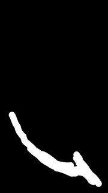
(no prompt recorded)
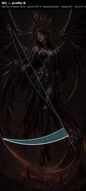
(no prompt recorded)
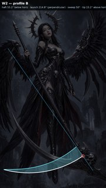
(no prompt recorded)
(no prompt recorded)
(no prompt recorded)
(no prompt recorded)
(no prompt recorded)
(no prompt recorded)
(no prompt recorded)
(no prompt recorded)
projects/bluemneme/scythe-valkyrie/prompts/r3-w2-all.txt
ATTACHED IMAGE One image is attached. IMAGE 1 is a finished photorealistic wallpaper artwork of an angel-of-death valkyrie. Your task is a SURGICAL EDIT: apply ONLY the corrections listed below and leave everything else untouched. EDIT — FREE HAND Her free hand on the VIEWER'S RIGHT, beside her hip, has a small extra dagger-like blade threaded between the fingers — it has no handle and attaches to nothing. Remove that blade completely, and move the hand onto the scythe haft where the haft passes beside her upper thigh on the VIEWER'S RIGHT: a natural, unmistakable five-fingered wrap around the haft, thumb visible, so she holds the scythe TWO-HANDED with the grips widely separated. Keep the arm's shoulder-to-hand anatomy unbroken and natural. EDIT — WAIST SKULL The small sculpted skull ornament on her armour near the waist shows THREE eye sockets in a row. Redraw it as a normal skull with exactly TWO eye sockets, keeping its size, position, and material. EDIT — FLOATING SHARD A small, sharp, shiny metal fragment floats alone in the foggy gap on the VIEWER'S LEFT between the lower wing and her skirt, connected to nothing. Remove it completely and fill the area with the surrounding fog. EDIT — BLADE SHAPE Reshape the scythe blade into a proper reaper-scythe blade: exactly ONE long crescent with smooth, CONSISTENT curvature from the ornate skull head on the lower VIEWER'S RIGHT to a single sharp tip toward the lower VIEWER'S LEFT, thick at the head and tapering evenly along its whole length. Keep the blade IN FRONT of the character, and keep it clearly SEPARATE from the wings: visible background must remain between the blade tip and the long wing feathers on the VIEWER'S LEFT — the blade must never touch, join, or continue into a wing. EDIT — WING TOPS Stray blade elements stick UP above the mechanical wing joints at the top of the wings, most visibly on the VIEWER'S RIGHT wing. Remove the stray blade elements ABOVE the mechanical joints, restoring clean sky and fog above each joint. Wing-blades and feathers belong only BELOW and BEHIND the mechanical joint line; the joints themselves and the wing structure below them stay exactly as they are. PRESERVATION Apart from the edits listed above, reproduce IMAGE 1 EXACTLY: the same character, face, expression, hair, halo crown, armour and ornament detail, pose, wings, scythe, background, lighting, colour grading, and level of detail, at the same framing on the same tall canvas shape as IMAGE 1. Do not restyle, re-light, sharpen, or reinterpret anything. Add no new objects, no extra glow, and no text, labels, logos, or watermarks.